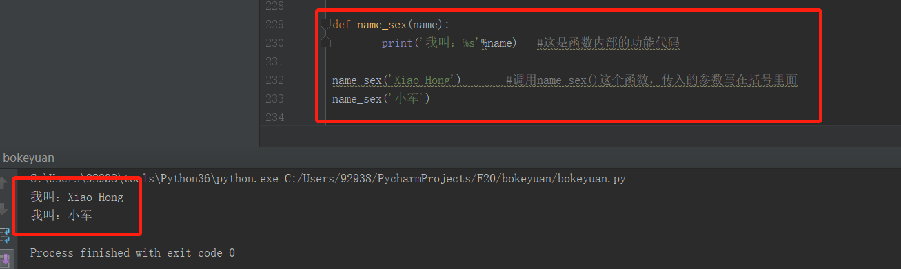
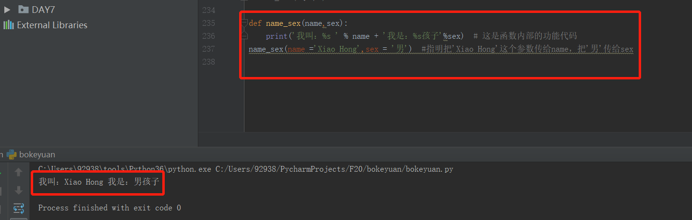
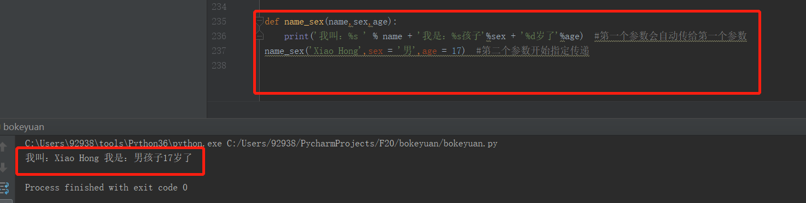
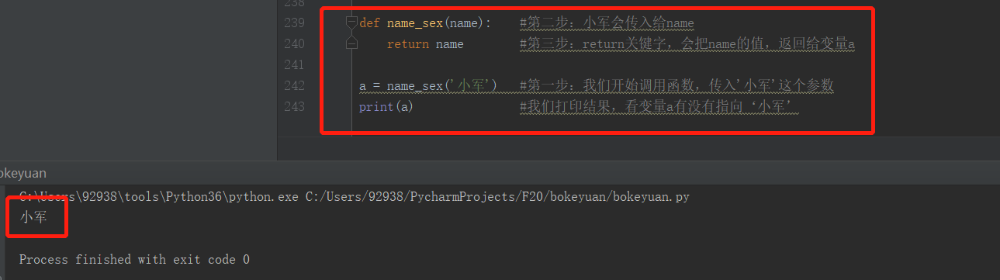
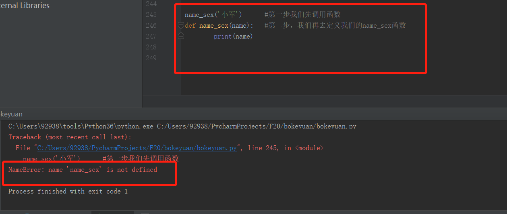
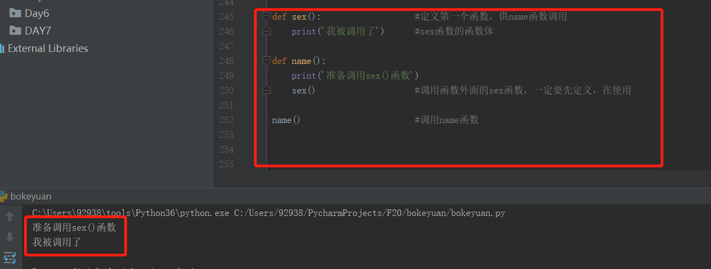
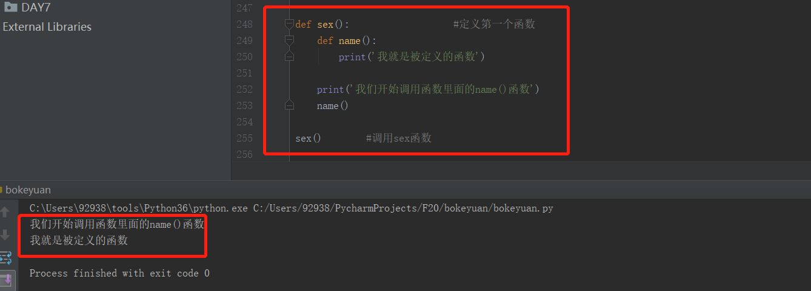
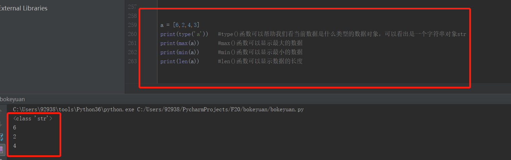

周日的早上，吃的饱饱，刷刷抖音，开始学习新一天的知识了~~~
函数的参数：
昨天的笔记中，我们已经使用了参数，在案例中的name和sex 就是参数。
一般的函数都是有参数的，函数的参数都是放在函数定义的括号里的，函数参数的命名规则和我们说的变量的命名规则基本一样，一定要清晰明了。（能概括出它的意义，让人阅读你的代码，就知道这个参数是干嘛的就行）。当然参数也可以没有，可以是一个，也可以是多个。
比如：
1 def name_sex(name): #定义一个name_sex函数，这个函数有一个name参数，记得冒号结尾。
2 def name_sex(name,sex): #定义一个name_sex函数，这个函数有两个参数，用英文逗号隔开。对于有参数的函数，我们可以是这样直接传入参数调用。
def name_sex(name): #自定义函数name_sex()
print('我叫：%s'%name) #这是函数内部的功能代码
name_sex('Xiao Hong') #调用name_sex()这个函数，传入的参数写在括号里面
name_sex('小军') 
同样的我们也可以指明参数调用，也就是我们说的关键字参数。
1 def name_sex(name,sex):
2 print('我叫：%s ' % name + '我是：%s孩子'%sex) # 这是函数内部的功能代码
3 name_sex(name ='Xiao Hong',sex = '男') #指明把'Xiao Hong'这个参数传给name，把'男'传给sex
相信大家理解了什么是关键字参数，但是有一个规则：就是说，如果第某个参数，使用了关键字，那么他后面的参数都必须使用关键字。
我们看个简单的案例： %d的意思是要传入的是数字对象
1 def name_sex(name,sex,age):
2 print('我叫：%s ' % name + '我是：%s孩子'%sex + '%d岁了'%age) #第一个参数会自动传给第一个参数
3 name_sex('Xiao Hong',sex = '男',age = 17) #第二个参数开始指定传递
一定要记住规则：如果第某个参数，使用了关键字，那么他后面的参数都必须使用关键字。（如果第一个使用了关键字参数，后面的都不使用，那么会报错的哦）

简单的参数应用方法我们就到这里，之后的自动化如果有用到其他参数我们在做细化的提升。
我们看下函数的返回值
函数的返回值可以有，也可以没有。如果我们需要这个函数返回些我们想要的结果，需要使用到return关键字：
1 def name_sex(name): #第二步：小军会传入给name
2 return name #第三步：return关键字，会把name的值，返回给变量a
3
4 a = name_sex('小军') #第一步：开始使用变量a调用函数，传入'小军'这个参数
5 print(a) #我们打印结果，看变量a有没有指向‘小军’
函数的返回值大家理解了吗？如果还是有疑惑可以评论留言哦~
我们再看下函数里面调用函数，之前我们是在函数外面调用函数。
实际的工作场景中，我们很有可能在函数里面调用其他函数，但是需要注意的是，函数在还没有定义的时候，不能调用，否则会报错：我们先看个简单的小案例:

name我们看下正确的方法：大家看明白了吗？一定要先定义，在调用。
def name_sex(name): #第一步，定义我们的name_sex函数
print(name)
name_sex('小军') #第二步我们调用函数搞清楚了上面的规则，接下来：我们开始函数里面调用函数~
1 def sex(): #定义第一个函数，供name函数调用
2 print('我被调用了') #sex函数的函数体
3
4 def name():
5 print('准备调用sex()函数')
6 sex() #调用函数外面的sex函数，一定要先定义，在使用
7
8 name() #调用name函数
其实把两个函数换换位置也是可以的：因为我们name()函数再没有被调用的时候，是不会去调用sex函数。当naem()函数被调用的时候，我们已经把sex()函数定义了。
1 def name():
2 print('准备调用sex()函数')
3 sex() #调用函数外面的sex函数，一定要先定义，在使用
4
5 def sex(): #定义第一个函数，供name函数调用
6 print('我被调用了') #sex函数的函数体
7
8 name() #调用name函数如果你没有理解，听我的，把这几行代码敲上十遍，如果还是没有理解可以联系我哦~
还有一个场景就是函数里面定义一个新的函数：（记住哦~在函数A内部定义函数B后，B函数的使用范围仅仅是在函数A内部~）
1 def sex(): #定义第一个函数
2 def name():
3 print('我就是被定义的函数')
4
5 print('我们开始调用函数里面的name()函数')
6 name()
7
8 sex() #调用sex函数
相信你对函数有了一定的认识，那么我们认识下Python内置的一些函数吧，这些函数可都是你以后代码路上的十八般武器~~~·
1 a = [6,2,4,3]
2 print(type('a')) #type()函数可以帮助我们看当前数据是什么类型的数据对象，可以看出是一个字符串对象str
3 print(max(a)) #max()函数可以显示最大的数据
4 print(min(a)) #min()函数可以显示最小的数据
5 print(len(a)) #len()函数可以显示数据的长度
没错我们在使用的print()也是一个内置函数，是打印输出结果显示在我们的屏幕上
函数的基本知识就是这么多了，内置的函数还有很多，以后笔记涉及到新的函数，在细化~~~
总结：
1、函数的定义必须使用def关键字，后面是函数的名字，然后括号里面是函数的参数，可以不写参数，最后以以英文冒号结尾
2、函数定义完后，里面的函数体，要缩进，建议大家按4下空格
3、函数调用的时候就是函数的名字加括号neme() 可以传入你需要的参数，可以不写参数
4、函数括号里面的参数，如果第某个参数开始指定参数传入，那么以它开始后面的参数都要指定参数传入-------关键字参数
5、函数可以返回结果，也可以不返回，如果需要返回 就用return关键字
6、函数有时候我们需要他返回给我们结果，那么谁调用的函数，结果就返回给谁。比如 a = name() 最后返回的结果会赋值给变量a
拜拜~~~~~~不理解的小伙伴记得留言哦，欢迎关注，相互学习。。。
------------------- 一个在路上的初学者